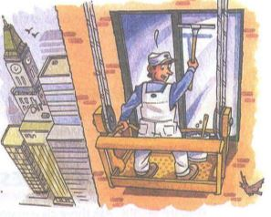

Please be careful. ေက်းဇူးျပဳလို႕ဂရုစိုက္ပါ။

Richard: Hey, Stephanie. I hear you have a new job.
ေဟး..စတီဖန္...နင္အလုပ္သစ္ရတယ္လို႕ငါၾကားတယ္
Stephanie: Yes, I'm teaching math at Lincoin High School.
ဟုတ္တယ္..ဟုတ္တယ္..ငါလင္ကြန္အထက္တန္းေက်ာင္းမွာစာျပေနတယ္
Richard: How do you like it?
မင္း အလုပ္ကိုေကါ ၾကိဳက္လား
Stephanie: It's great. The students are very terrific. How are things with you?
ေကါင္းပါတယ္။ ေက်ာင္းသားေတြလည္း ေတာ္ၾကတယ္။ မင္းေကါ အဆင္ေျပာလား
Richard: Not bad. I'm a window washer now, you know.
မဆိုးပါဘူး...ငါက တံခါးသန္႕ရွင္းေရးလုပ္တယ္ေလ...
Stephanie: Really? How do you like it?
တကယ္လား ..မင္းေကါ အလုပ္ကုိ ဘယ္လိုသေဘာရလဲ
Stephanie: It's stressful job. And it's pretty dangerous.
အလုပ္က ဖိအားမ်ားတယ္...ျပီးရင္ အႏၱရယ္မ်ားတယ္။
Stephanie: Please be careful:
ေက်းဇူးျပဳလို႕..ဂရုစိုက္ပါကြာ